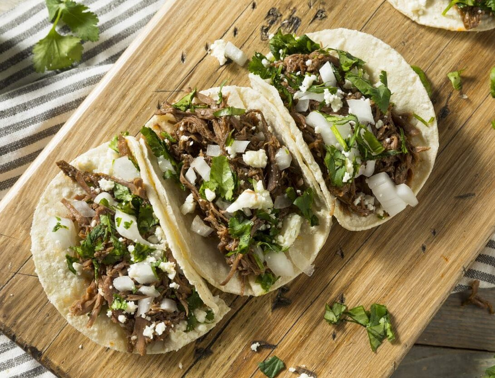

Según el diccionario, un taco es un antojito mexicano consistente en una tortilla de maíz o harina, doblada o enrollada, que contiene diversos alimentos como carne, frijoles o guisos, generalmente acompañados de salsa. Es la comida más representativa de México, con orígenes prehispánicos y alto valor
Los tacos consisten principalmente en una tortilla (de maíz o harina) que envuelve diversos rellenos, comúnmente carne de res, cerdo, pollo, pescado o guisados, acompañados de cebolla, cilantro, limón y salsa. Originarios de México, los tipos más populares incluyen al pastor, carnitas, barbacoa, asada, canasta y guisados.
Para hacer tacos caseros, marina carne (res, cerdo o pollo) con limón, ajo, sal, pimienta y comino durante 20 minutos, luego cocínala a fuego alto hasta dorar. Sirve en tortillas de maíz o harina calientes con cebolla picada, cilantro fresco, salsa al gusto (verde o roja) y limón.